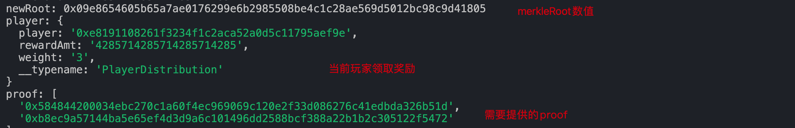

第5节：世界杯竞猜（airdrop）
本文收录于我的开源项目：https://github.com/dukedaily/solidity-expert ，欢迎star转发，文末加V入群。
概述
WorldCup合约（已经完成）✅
发行一个worldCupToken（新合约）
统计玩家Play的历史，计算每个人分配多少（由subgraph进行链下统计）
管理员分配奖励（新合约）
用户领取奖励
场景设置如下：
最终胜出国家：0，此时合约中一共有：4gwei，三个人平分：每个人获得 4/3 gwei，如果有剩余，则转给管理员。
合约地址：0x471a8f71d3bBB8254e36832FBbb6928b73298347

背景
| 玩家 | EOA地址 | 国家 | 备注 |
|---|---|---|---|
| 管理员 | 0xE8191108261f3234f1C2acA52a0D5C11795Aef9E | 负责开奖 | |
| Account1 | 0xE8191108261f3234f1C2acA52a0D5C11795Aef9E | 0，1 | |
| Account2 | 0xC4109e427A149239e6C1E35Bb2eCD0015B6500B8 | 0 | |
| Account3 | 0x572ed8c1Aa486e6a016A7178E41e9Fc1E59CAe63 | 0 |
当前世界杯合约：0x0fd554503c88E9cE02D6f81799F928c8Aa202Dd3
部署奖励Token
WorldCupToken
// SPDX-License-Identifier: MIT
pragma solidity ^0.8.9;
import "@openzeppelin/contracts/token/ERC20/ERC20.sol";
//合约继承，使用 is
contract WorldCupToken is ERC20 {
// 2. 一次性mint出来，不允许后续mint
constructor(
string memory name_,
string memory symbol_,
uint256 totalSupply_
) ERC20(name_, symbol_) {
_mint(msg.sender, totalSupply_);
}
}
部署合约
# 部署合约
npx hardhat run scripts/deployWorldCupToken --network goerli
# 验证合约
npx hardhat verify --contract contracts/tokens/WorldCupToken.sol:WorldCupToken 0x4c305227E762634CB7d3d9291e42b423eD45f1AD "World Cup Token" "WCT" 10000000000000000000000000 --network goerli
# 0x4c305227E762634CB7d3d9291e42b423eD45f1AD
统计玩家Play数据
回顾subgraph工作流程（上节介绍）

编写配置文件
将下面内容添加到subgraph.yaml中，其中包含对WorldCup合约的监听，以及对发放奖励合约（WorldCupDistributor）的监听。

specVersion: 0.0.4
schema:
file: ./schema.graphql
dataSources:
- kind: ethereum
name: WorldCup
network: goerli
source:
# 监听世界杯主合约
address: "0x0fd554503c88E9cE02D6f81799F928c8Aa202Dd3"
abi: WorldCup
startBlock: 7813068
# ....
abis:
- name: WorldCup
file: ./abis/WorldCup.json
eventHandlers:
# 监听事件
- event: Play(uint8,address,uint8)
handler: handlePlay
- event: Finialize(uint8,uint256)
handler: handleFinialize
- event: ClaimReward(address,uint256)
handler: handleClaimReward
file: ./src/world-cup.ts
- kind: ethereum
name: WorldCupDistributor
network: goerli
source:
# 监听奖励合约
address: "0x857c162eB34f3FA3f14A8A7F211017D2505df724"
abi: WorldCupDistributor
startBlock: 7813265
# ...
abis:
- name: WorldCupDistributor
file: ./abis/WorldCupDistributor.json
eventHandlers:
# 监听事件
- event: DistributeReward(indexed bytes32,indexed uint256,uint256,uint256)
handler: handleDistributeReward
- event: Claimed(indexed address,indexed address,indexed uint256)
handler: handleClaimed
file: ./src/world-cup.ts
编写 Schema
schema.graphql，这些结构相当于数据库，用于在subgraph中存储计算后的数据。
# 玩家Player详情
type PlayRecord @entity {
id: ID!
index: BigInt! # uint256
player: Bytes! # address
selectCountry: BigInt! # uint256
time: BigInt!
block: BigInt!
}
# 球队winner详情
type FinializeHistory @entity {
id: ID!
result: BigInt!
}
# 玩家奖励详情（分配后）
type PlayerDistribution @entity {
id: ID!
index: BigInt!
player: Bytes!
rewardAmt: BigInt!
weight: BigInt!
isClaimed: Boolean!
}
# 更多部分参见源代码....
监听Play事件
export function handlePlay(event: Play): void {
// 统计所有的play事件，存储起来
// 1. get id
let id = event.params._player.toHex() + "#" + event.params._currRound.toString() + "#" + event.block.timestamp.toHex();
// 2. create entity
let entity = new PlayRecord(id);
// 3. set data
entity.index = BigInt.fromI32(event.params._currRound);
entity.player = event.params._player;
entity.selectCountry = BigInt.fromI32(event.params._country);
entity.time = event.block.timestamp;
entity.block = event.block.number;
// 4. save
entity.save()
// 5. save nohandle play record
let noHandle = NeedToHandle.load(NO_HANDLE_ID);
if (!noHandle) {
noHandle = new NeedToHandle(NO_HANDLE_ID);
noHandle.list = [];
}
// noHandle.list.push(id)
let list = noHandle.list;
list.push(id);
noHandle.list = list;
noHandle.save()
}
// 更多部分参见源代码....
监听Finalize事件
export function handleFinialize(event: Finialize): void {
let id = event.params._currRound.toString();
let entity = new FinializeHistory(id);
entity.result = event.params._country;
entity.save();
}
部署到subgraph
方式一：自己部署graphnode节点
这部分我们在上一节已经介绍，按顺序执行即可。
# 启动graphnode
docker-compose up
# 创建并
npm run codegen
npm run build
npm run create-local
npm run deploy-local
# Deployed to http://localhost:8000/subgraphs/name/duke/worldcup/graphql
方式二：使用subgraph官方结点
https://thegraph.com/hosted-service/dashboard
获取请求Play数据
启动subgraph后，需要安静等待一会儿，等待数据同步完成后，我们便可以查询，由于之前已经使用3个用户发起过四次Play操作，所以得到结果如下：
{
playRecords(where: {
index: 0
}){
id
index
player
selectCountry
block
}
}
结果：

获取冠军球队
{
finializeHistories{
id
result
}
}

分配奖励分析
技术选型
使用链下签名方式，让用户链上claim：opensea
- 需要为每个用户都生成一个链下的签名，由管理员签发；
- 好处是：分配时不需要调用合约；多期奖励可以一次领取；
- 代价是：需要入库，对后台要求更高
使用merkle tree方式，对这一期所有的玩家进行统一设置，然后各自去claim：
- 好处是：不需要入库，直接设置一次merkleTree即可（由所有用户来当叶子节点）
- 代价是：需要调用一次合约；多期奖励无法一次领取，我们选用方法2
merkleRoot是一个hash值，每个节点是一个叶子（如M），根节点hash确定后，叶子节点和通向根节点路径中的hash值就都确定了，从而可以完成快速验证功能，能够满足我们的奖励方法需求。

实现思路
管理员要根据最终每个人分配到数量，生成一个merkleRoot，写入合约
- 需要从subgraph请求Play历史数据
- 然后在本地（前端或脚本），按照我们的空投策略（参与权重1，猜中权重2），生成merkleRoot
- 调用奖励合约设置merkleRoot -》发送事件，在subgraph计算每个用户可以分配的数量
用户在claim的时候，需要携带叶子信息和证明信息，传递给合约，合约校验通过后，执行奖励发放
- 需要从subgraph请求所有用户的奖励数据-> 生成merkleRoot-> 生成证明。
- 然后从subgraph请求自己能够获取的数量。
- 调用奖励合约，领取奖励
奖励流程
奖励发放与领取逻辑介绍：
管理员调用distribute（步骤7），这个方法的核心参数是MerkleRoot，是由所有玩家的“地址+奖励数量”作为叶子结点生成的。为了得到这些叶子结点，我们需要对subgraph发起请求玩家的原始数据（步骤8），然后根据奖励分配规则，在前端本地计算后每个人分配的数量，进而生成merkleRoot（步骤9），设置到合约中。
存储MerkleRoot后发出事件，subgraph内部收到事件后，会在重复这个计算过程，并将计算结果存储在subgraph的db中（reward list）
玩家发起领奖（步骤11）时，点击ClaimReward，此时需要的参数为：玩家、奖励数量、证明，用于在合约内部验证MerkleRoot。这些数据在上一步已经存储在subgraph中了，所以我们发起请求获取奖励列表（步骤12），在本地计算证明proof，然后传递给合约。
合约接收到玩家领奖请求时，会将当前用户当成一个叶子节点，进而与已经设置好的merkleRoot进行验证。如果验证成功，则向用户转账奖励，反之合约revert。
原图：https://whimsical.com/Nfi7rAVqvYJd8mCLYHZYrx

分配奖励合约
// SPDX-License-Identifier: GPL-2.0-or-later
pragma solidity ^0.8.0;
import {IERC20} from "@openzeppelin/contracts/token/ERC20/IERC20.sol";
import "./libraries/MerkleProof.sol";
import './libraries/TransferHelper.sol';
/// @notice use for claim reward
contract WorldCupDistributor {
// 省略部分代码，详见代码仓库 ....
function distributeReward(
uint256 _index,
uint256 _amount,
uint256 _settleBlockNumber,
bytes32 _merkleRoot
) external onlyOwner {
merkleRoot = _merkleRoot;
require(_index == merkleDistributors.length, "index already exists");
uint256 currAmount = IERC20(token).balanceOf(address(this));
require(currAmount >= _amount, "Insufficient reward funds");
require(block.number >= _settleBlockNumber, "!blockNumber");
// ...
merkleDistributors.push(
MerkleDistributor(_merkleRoot, _index, _amount, _settleBlockNumber)
);
emit DistributeReward(_merkleRoot, _index, _amount, _settleBlockNumber);
}
function claim(
uint256 index,
uint256 amount,
bytes32[] calldata proof
) external {
address user = msg.sender;
require(merkleDistributors.length > index, "Invalid index");
require(!isClaimed(index, user), "Drop already claimed.");
MerkleDistributor storage merkleDistributor = merkleDistributors[index];
require(merkleDistributor.amount >= amount, "Not sufficient");
bytes32 leaf = keccak256(abi.encodePacked(index, user, amount));
require(
// 核心校验逻辑
MerkleProof.verify(proof, merkleDistributor.merkleRoot, leaf),
"Invalid proof."
);
merkleDistributor.amount = merkleDistributor.amount - amount;
// 标识用户已经领取
claimedState[index][user] = true;
// 向用户转账
address(token).safeTransfer(msg.sender, amount);
emit Claimed(address(this), user, amount);
}
}
部署合约
npx hardhat scripts/deployDistributor.ts --network goerli
# 0xF19233dFE30219F4D6200c02826B80e4347EF8BF
npx hardhat verify 0xF19233dFE30219F4D6200c02826B80e4347EF8BF 0x4c305227E762634CB7d3d9291e42b423eD45f1AD --network goerli
部署后，我们需要手动向WorldCupDistributor中转入1w个奖励WorldCupToken，用于后续发放奖励。
分发奖励
至此，我们完成了对事件的监听，接下来要由管理员进行发奖，Player进行领奖，在合约项目中，直接运行脚本：contracts/scripts/distributeReward.ts，对第0期的所有玩家，发放10000 * 10^18 个奖励，读取数据，生成merkleRoot
npx hardhat run scripts/distributeReward.ts
返回：

管理员分配奖励：调用奖励合约distruibuteRward方法，tx：https://goerli.etherscan.io/tx/0xb710c3d5c23072574e128d748f712eb1d6df95d59d00a58c0978e66fc9e44ae1，注意此处要用到newRoot值，这个是根据所有玩家奖励数计算得到的，详见脚本。

监听奖励事件
遍历本期所有的Play记录
计算每个玩家的权重
按照权重分配总奖励数
监听奖励发放事件，进行计算：（核心逻辑）
export function handleDistributeReward(event: DistributeReward): void {
// parse parameters first
let id = event.params.index.toString();
let rewardAmt = event.params.amount;
let index = event.params.index;
let settleBlockNumber = event.params.settleBlockNumber;
// 找到当前发奖周期，查看哪个国家是winner
let winCountry = FinializeHistory.load(id)
if (!winCountry) {
return;
}
let totalWeight = BigInt.fromI32(0)
let rewardActuallyAmt = BigInt.fromI32(0)
let rewardHistoryList: string[] = []; // for history check usage
let noHandle = NeedToHandle.load(NO_HANDLE_ID);
if (noHandle) {
let group = new TypedMap<Bytes, BigInt>();
let currentList = noHandle.list; // current record
let newList: string[] = []; // record won't be used this time
log.warning("current list: ", currentList)
for (let i = 0; i < currentList.length; i++) {
// 每个玩家都会得到奖励，默认权重weight为1
let playerWeight = BigInt.fromI32(1)
let record = PlayRecord.load(currentList[i]) as PlayRecord;
if (record.block > startBlock && record.block <= endBlock) {
if (winCountry.result == record.selectCountry) {
// 如果当前用户猜中了，奖励翻倍（权重*2）
playerWeight = playerWeight.times(BigInt.fromI32(2))
}
let prevWeight = group.get(record.player)
if (!prevWeight) {
prevWeight = BigInt.fromI32(0)
}
// 更新当前用户权重到内存中，供下面👇进行奖励分配
group.set(record.player, prevWeight.plus(playerWeight));
totalWeight = totalWeight.plus(playerWeight);
} else {
// 遍历所有的record，累加到player之上, block区间之外的，会添加到newList中
newList.push(currentList[i]);
}
}
// 便利所有的group，为每个人分配奖励数量，然后存储在UserDistribution中(供最终调用)
for (let j = 0; j < group.entries.length; j++) {
let player = group.entries[j].key;
let weight = group.entries[j].value;
let id = player.toString() + "#" + index.toString()
log.warning("totalWeight: ", [totalWeight.toString()])
let reward = rewardAmt.times(weight).div(totalWeight);
let playerDistribution = new PlayerDistribution(id);
playerDistribution.index = index;
playerDistribution.player = player;
playerDistribution.rewardAmt = reward;
playerDistribution.weight = weight;
playerDistribution.isClaimed = false;
playerDistribution.save();
rewardHistoryList.push(id);
rewardActuallyAmt = rewardActuallyAmt.plus(reward);
}
noHandle.list = newList;
noHandle.save();
}
}
查询分配结果
第0期
总奖励数量：10000*10^18
| user | select | winner | weight | totalWeight | totalReward | userAmt | |
|---|---|---|---|---|---|---|---|
| user1 | 0 | 0 | 2 | 7 | 10000 | 3/7 * 10000 | 4285.714285714285 |
| user1 | 1 | 0 | 1 | 7 | 10000 | ||
| user2 | 0 | 0 | 2 | 7 | 10000 | 2/7* 10000 | 2857.142857142857 |
| user3 | 0 | 0 | 2 | 7 | 10000 | 2/7* 10000 | 2857.142857142857 |
用户领取奖励
运行脚本，获取领取信息
npx hardhat run scripts/distributeReward.ts
用户领取奖励：调用奖励合约的claim方法，tx：https://goerli.etherscan.io/tx/0x5959f3fcc6eff7358663b740bff3ce097ed40bf5742634139f6dee0df3cb5f80，注意此处的amount是脚本中读取subgraph获取的，proof也是本地计算得出来的。

查看流水，发现领取奖励成功！

小结
至此，我们终于把奖励发放介绍完了，业务逻辑比较复杂，这是主流的方法奖励方式，接下来的课程中，我们将一起学习链下签名相关内容，并且引入个人中心，使用NFT作为用户头像。
加V入群：Adugii，公众号：阿杜在新加坡，一起抱团拥抱web3，下期见！
关于作者：国内第一批区块链布道者；2017年开始专注于区块链教育(btc, eth, fabric)，目前base新加坡，专注海外defi,dex,元宇宙等业务方向。